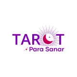
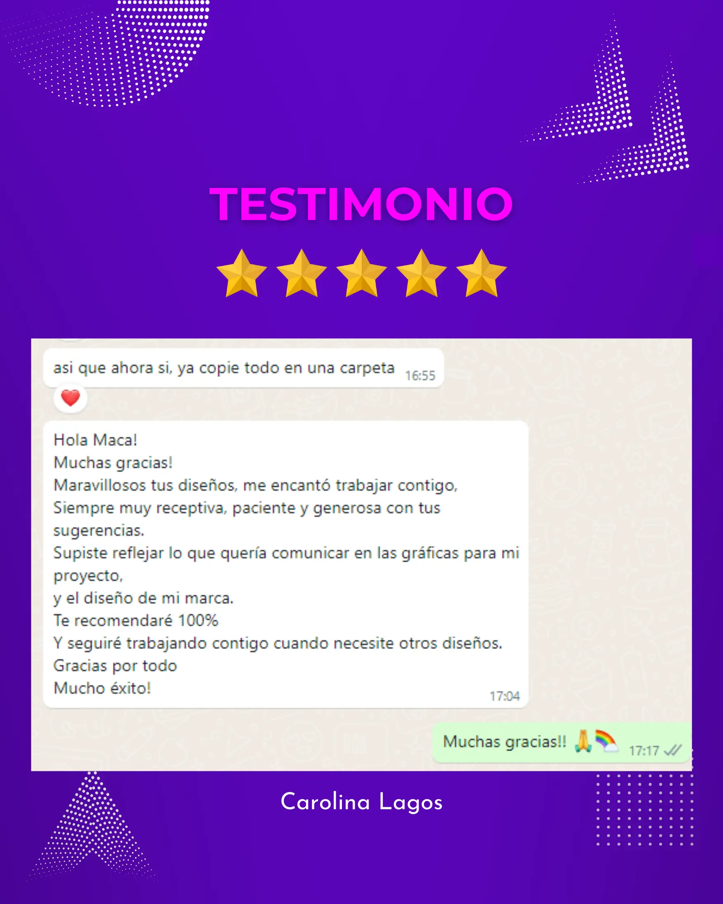

Detalles del proyecto
Herramientas utilizadas
Colaboradores/Stakeholders
Contexto
Carolina Lagos llevaba tiempo construyendo su marca personal de tarot sin una identidad visual coherente. Cada publicación se veía distinta, la marca no transmitía profesionalismo y los seguidores no tenían una experiencia visual consistente que reforzara la confianza en sus servicios.
Necesitaba un sistema que ella pudiera operar sola — sin depender de un diseñador para cada post — y que escalara a medida que incorporara nuevos servicios educativos.
Desafío
Diseñar una identidad visual completa y un sistema de plantillas que Carolina pudiera usar con autonomía total — sin conocimientos de diseño — manteniendo coherencia en todos sus canales y con capacidad de escalar a nuevos formatos y servicios sin romper la marca.
Empresa/Cliente: Tarot para Sanar

Proceso
Investigación empática: Entrevista en profundidad con Carolina para explorar valores, misión, sensaciones clave y el tipo de audiencia a la que quería llegar. No empecé diseñando — empecé escuchando.
Benchmarking competitivo: Analicé marcas de tarot y bienestar espiritual para identificar patrones visuales saturados y oportunidades de diferenciación real — evitando los clichés del rubro sin perder la autenticidad de la marca.
Card sorting & journey mapping de contenidos: Organicé los formatos de publicación (carruseles educativos, reels, covers, stories) según el flujo de consumo de la audiencia — para que cada pieza tuviera un rol claro en el recorrido del seguidor.
Diseño de identidad & sistema de plantillas: Diseñé el logotipo y sus variantes en Illustrator — versión principal, negativa y simplificada para adaptarse a cualquier fondo. Construí 18 plantillas en Canva completamente editables, organizadas por formato y propósito, con instrucciones de uso integradas.
A/B testing & validación iterativa: Validé combinaciones de color, tipografía y composición con grupos pequeños de seguidores potenciales. Cada ronda de feedback generó ajustes concretos — no decorativos.
Resultados
+25% de engagement en el primer mes — incremento en interacciones medido directamente por la clienta tras el lanzamiento de la nueva identidad.
18 plantillas editables entregadas — carruseles, reels y covers en Canva, organizadas y listas para uso inmediato sin conocimientos de diseño.
Sistema visual autónomo — Carolina publica con coherencia de marca sin depender de un diseñador para cada pieza nueva.
Cliente recurrente — meses después del cierre del proyecto, Carolina volvió con un nuevo proyecto. La mejor validación de que el trabajo entregó valor real.
100% de satisfacción — testimonio espontáneo y recomendación pública en redes sociales.
Rol — Social Media Designer & UX Strategist
Como UX Strategistapliqué investigación empática, benchmarking, card sorting y journey mapping para entender a fondo el negocio, la audiencia y los objetivos de Carolina — antes de diseñar una sola pieza.
Con esos insights desarrollé tres propuestas de identidad visual, validadas con A/B testing y rondas de feedback iterativo. La propuesta elegida evolucionó en un sistema completo: logotipo, paleta, tipografía y 18 plantillas en Canva con instrucciones integradas para que Carolina pudiera operar con total autonomía.
Este proyecto demuestra algo que aplico en todos mis trabajos — independientemente del tamaño del cliente: el proceso UX no es exclusivo de grandes empresas. Una marca personal bien investigada, bien diseñada y bien documentada entrega resultados medibles y genera confianza duradera.
Testimonio
Testimonio recibido al cierre del proyecto — sin solicitud previa. Carolina volvió con un nuevo proyecto meses después.
-

May 2024 – Jun 2024 |Freelancer
Testimonio de Proyecto“Supiste reflejar lo que quería comunicar… Te recomendaré 100% y seguiré trabajando contigo.”
Carolina Lagos
Fundadora de Tarot para Sanar
May 2024 – Jun 2024 · Proyecto freelance independiente.
Rol: Social Media Designer & UX Strategist — rebranding completo, identidad visual y sistema de plantillas.